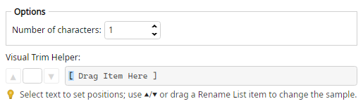

Magic File Renamer Help
Extract Left

Filter options (screenshot optional — capture to images/ExtractLeft.png).
Keeps only the first N characters of the selected text; the rest is removed.
Options
- Number of characters — How many characters to keep from the left.
Examples
Portishead >>> Porti
Glory Box >>> Glory
Examples use Number of characters = 5.